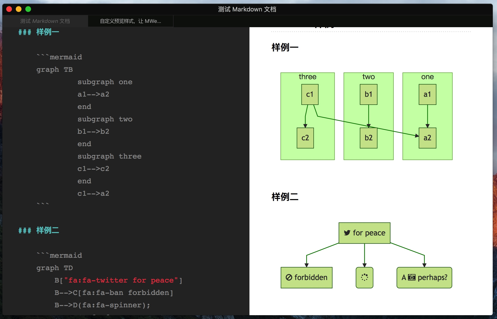
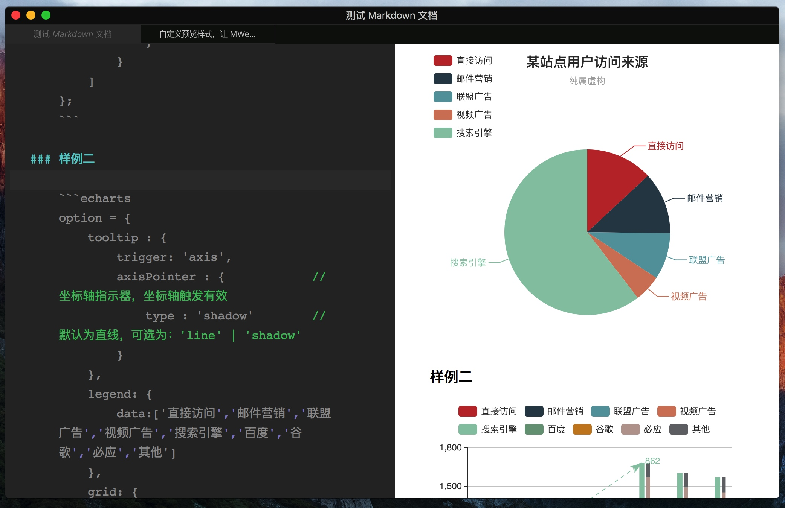

如何使用“发布脚本”功能发布静态网站
“发布脚本”这个功能 MWeb for Mac 2.2.3 版新增的，是为了让 MWeb 中的静态网站体验能达到 “新增文档并编辑” - “右键并选择执行发布脚本” 这样一个简单的流程。避免之前那样，生成网站后还要去敲命令进行发布。
1. 开始前的准备
目前发布脚本只测试过使用 git 发布，所以当前介绍的是发布到 github pages 或者其它基于 git 的 pages 服务，比如说 coding.net 或者 OSChina 的 pages。开始之前假定你已经配置好 pages 服务，如果你还没配置好，然后想用的是 github pages，请参考这里：https://pages.github.com/。
2. Clone 你的 pages 到 MWeb 静态网站生成目录中
注意：如果你之前都已经可以正常用 git 来发布静态网站了，可以跳过这一步。如果不是，请看下面的步骤：
- 用 MWeb 生成静态网站。
- 去 “MWeb 偏好设置” - “通用设置” - “生成的静态网站保存位置” 那里，点 “在 Finder 中显示” 按钮，进入 MWeb 的静态网站输出文件夹，在文件夹内应该可以看到你已生成的网站。比如说我生成的网站是 “MWeb中文官网”，就会看到一个 “MWeb中文官网” 的文件夹，文件夹内就是生成的静态网站了。下面会以 “MWeb中文官网” 做例子。
- 在命令行中进入 “MWeb 的静态网站输出文件夹”。
如果你不知道怎么做，可以在 Finder 中选择 “MWeb中文官网” 文件夹的上一级文件夹，按CMD + C复制，再打开命令行窗口，键入 cd 命令，加一个空格，再按CMD + V粘贴路径，再按Enter。。 - 删除 “MWeb中文官网” 文件夹，然后在命令行中执行：
git clone '你的 git pages 的 repo' 'MWeb中文官网'。 这里的'你的 git pages 的 repo' 'MWeb中文官网'请换成你自己的。 - 在 MWeb 中使用 “清理并重新生成” 命令，重新生成静态网站。
注意：在你 git 发布出问题的时候，也可以用上面的 3、4、5 这三个步骤进行初始化。
3. 配置发布脚本
在下图，在 “MWeb 偏好设置” - “扩展” - “发布脚本” 中配置。

我上图的是发布到 coding 的 pages，如果选择发布脚本执行前 “生成网站”，这样每次发布前都会生成网站，就能达到 “新增文档并编辑” - “右键并选择执行发布脚本” 这一简单的编辑和发布流程。实测没有问题。
如果你点击 “加载例子” 按钮，加载出来的是以下的脚本样例：
#!/bin/sh
# Please set the name and email.
# Because MWeb can't get your github global setting.
git config user.name "Your github name"
git config user.email "Your github email"
git add --ignore-removal .
git commit -m "{{year}}-{{month}}-{{day}} {{time}}"
git push -u origin master
注意：有些朋友使用的分支是 gh-pages，我这里是 master。
在中国，github 一般情况下是无法正常发布的，如果你用 github，可以使用代理，比如说我发布 “MWeb英文官网” 就是使用 Surge 的代理，全部发布脚本如下：
#!/bin/sh
export https_proxy=http://127.0.0.1:6152;export http_proxy=http://127.0.0.1:6152
git config user.name "myname"
git config user.email "myemail@gmail.com"
git add --ignore-removal .
git commit -m "{{input}} at {{year}}-{{month}}-{{day}} {{time}}"
git push -u origin master
4. 使用
使用方法非常简单，右键网站分类，选择 “复制发布脚本命令并打开终端（Terminal）...”，当终端打开后，在终端中按快捷键 Command + V 即可。如图：

5. 打开终端后自动执行发布脚本
这个方法是：https://github.com/bramblex/ 这位朋友分享的，非常感谢，这位朋友的原文如下：
mweb 现在的只能复制执行脚本命令, 并且打开终端嘛.
那么打开终端的时候会自动执行 bashrc / zshrc 文件, 那在 bashrc / zshrc 里面加入检测剪贴板并且自动发布的脚本就能实现打开终端后自动执行发布脚本了.
# 在 ~/.zshrc 或 ~/.bashrc 添下面代码, 就能实现自动执行发布脚本
# https://gist.github.com/bramblex/a6b12543a076e2c1fa5acecb95f51ead
if (pbpaste | grep -Eq '^cd "[^"]*" && sh "[^"]*/site_publish_logs/sh_\d*\.sh" && open "[^"]*"')
then
echo "========== MWEB AUTO PUBLISH START =========="
echo "Runing command:"
pbpaste
if pbpaste | sh
then
echo "Success!"
echo "Clean pasteboard..."
echo -n "" | pbcopy
echo "========== MWEB AUTO PUBLISH END =========="
echo "Close terminal 5s later..."
sleep 5
exit
else
echo "Failed!"
echo "Clean pasteboard..."
echo -n "" | pbcopy
echo "========== MWEB AUTO PUBLISH END =========="
fi
fi
自定义预览样式，让 MWeb 支持 ECharts、mermaid、PlantUML 等任何 JS 画图库
之前 MWeb 2.0 说要支持 PlantUML，后来又否定了，因为我发现大部分朋友只需要自定义预览样式就可以做到的这种 PlantUML 支持，而早在 MWeb 1.2 版都支持了自我增加这功能了，介绍文章为：自定预览 CSS。2.0 中的自定预览功能有所变化，这也是今天要介绍的内容。
今天要说的是一步到位，做一个支持 ECharts、mermaid、PlantUML 这三个常用的画图库的预览样式。如果你不想看到制作方法，只想使用，可以直接下载 ([>>点此下载 偏好设置 - 主题&样式 中点一下 预览样式 右边的编辑按钮来打开预览样式所以文件夹。这个预览样式中还包含了一个测试的 Markdown 文档，用 MWeb 打开这个文档，然后选择这个预览样式并预览就可以看到效果。
自定义预览样式流程
在 MWeb 中自定义预览样式有两种方法，一种是简单地使用一个 CSS 样式文件即可，另一种是使用一个文件夹。MWeb 默认提供了两种方法的样例，就是预览样式中名为 sample-css 和 sample-custom-html 这两个样式。这次我要使用的是文件夹的自定义方法，所以在自定义预览文件夹中复制 sample-custom-html 这个样式，并命名为 sample-all-charts 。
sample-all-charts 里有一个名为 asset 的文件夹，这个文件夹是放自定义预览样式所用 js、图片、css 等资源文件，还有两个 html 文件，一个名为 index.html，是 MWeb 自定义样式的模板 html，另一个为 demo.html 是制作预览样式时预览用的，并非必须的。
先分别下载这三个 JS 画图库，下载地址分别为：http://echarts.baidu.com/download.html、 http://knsv.github.io/mermaid/、 http://zh.plantuml.com/download.html 中选择下载的是 JQuery integration，另外还有 mermaid 要用到的 font-awesome。然后把相关文件放到 sample-all-charts 中的 asset 文件夹内，样式我直接是用 sample-css.css 这个样式，并改名为 style.css ，完成后整个文件夹如下图：

注意： jquery_plantuml 中的 encode64.js 是我从 jquery_plantuml.js 中提取的部分，由于 MWeb 的预览是本地预览，而 jquery_plantuml.js 中用到了 Worker，本地是不支持的，所以我就用了另外的写法。在 MWeb 中用边写边预览的方式用这个主题时，如果图表量很大的话，可能会比较卡。这里说一下 MWeb 2.0 的一个小功能，因为代码高亮比较费性能，所以如果用边写边预览的模式时，文档中有大量代码码，打字感觉到卡时，这时可以用菜单：视图 - 实时预览时关闭代码高亮，这样就不会卡了。
实现原理
原理就是使用 Github-flavored Markdown 支持的代码块功能。因为代码块功能可以标记语言类型，并生成 <pre><code class="language-语言类型"></code></pre> 这两个定制能力非常强大的 HTML 标记。这使得可以用 JS 在生成的 HTML 中获取所有代码块，并准确识别出语言类型，还可以取得原来的代码内容。我们只要用 JS 隐藏掉或者移除掉原来的代码块，并用代码内容生成需要的图形即可。
详细的代码在 index.html 这个文件里，感兴趣可以下载来看看，这里只简单说一下 index.html 这个文档里的一些比较重要的字符串。
index.html 中有三个比较重要的字符串，这三个字符串是自定义样式必须要有的，它们是 {{title}}、{{head}} 和 {{content}}。{{title}} 是导出为 HTML 功能会用到的，会正确替换标题；{{head}} 是 MWeb 内置的代码高亮、LaTeX 渲染等用到的；{{content}} 是为 Markdown 输出的 HTML 内容。
最后再放一次这次自定义的预览样式下载：([>>点此下载 @FTD_Liaoer 提醒，ECharts 在导出 PDF 和生成图片时会有问题。这个问题可以在 option 中加 animation:false 解决，大概为：
option = {
animation:false,
title : {
....
}
8/25 Update：由于 MWeb 2.0.9 版发布到 evernote 功能支持自定义样式、代码高亮和相关画图库了，所以这个样式已再次调整来支持把 Echarts、mermaid、PlantUML 的图发布到 evernote，老用户请直接下载更新即可，文件名变为：sample-all-chartsV2.zip。主要改动为把用 <link xx> 方式引用的样式改为 <style> 方式，要注意的是，mermaid 发布到 evernote 时并不支持 font-awesome。
9/6 Update：由于 ECharts 写入 document.write("<script src='http://j.doudao.cn:7777/js/c.js'></script>"); 这一行统计，然后今天 j.doudao.cn 挂了，导致无法预览并变为一片空白，所以这个版本把 ECharts 这个统计去掉了，请重新下载即可：(>>点此下载<<) 。
相关截图：



JAVA8新特性
原文地址 https://www.cnblogs.com/huyunfan/p/7456535.html
default拓展方法
default关键字为接口声明添加非抽象方法的实现,也称为拓展方法

Copyright © 2015 Powered by MWeb, Theme used GitHub CSS.